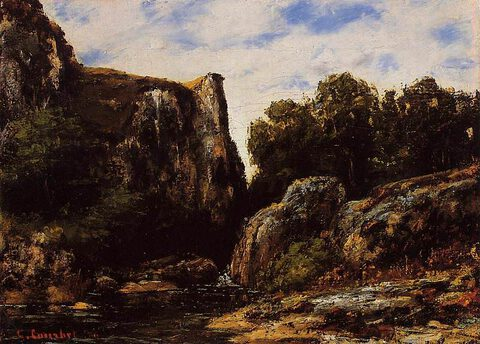

Gustave Courbet,1819 - 1877,Realism,French,"Jean Désiré Gustave Courbet (French: [ɡystav kuʁbɛ]; 10 June 1819 – 31 December 1877) was a French painter who led the Realism movement in 19th-century French painting. Committed to painting only what he could see, he rejected academic convention and the Romanticism of the previous generation of visual artists. His independence set an example that was important to later artists, such as the Impressionists and the Cubists. Courbet occupies an important place in 19th-century French painting as an innovator and as an artist willing to make bold social statements through his work.",https://en.wikipedia.org/wiki/Gustave_Courbet,59
